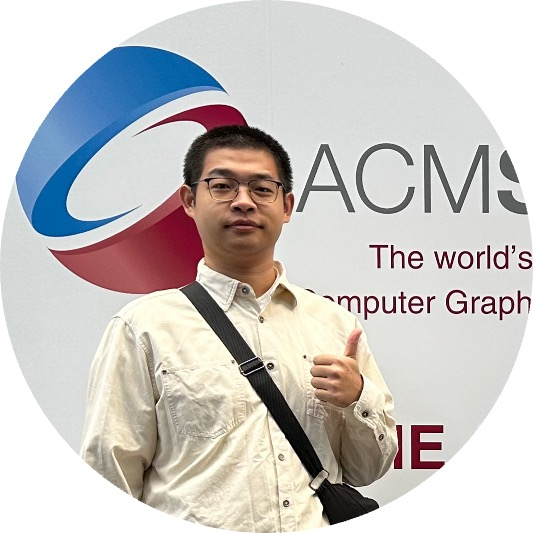

Siqi Li
I am currently a 3rd year PhD candidate under the supervision of Prof. Peng Song at Singapore University of Technology and Design (SUTD). My research cross AI and Computer Graphics, especially Agents for Generative tasks. Prior to SUTD, I worked as a researcher at BMW Group Innovation Lab where I researched on rendering and digital human, and prior to that I worked at Tencent Timi Studio as a game developer. I obtained my M.Sc. in Computer Science from NUAA in 2021.
Publications

Conformable Mechanisms on Freeform Surfaces
🏆 Best Paper Award
Computers & Graphics (Proc. of Shape Modeling International), 2025

mpcMech: Multi-Point Conjugation Mechanisms
ACM Transactions on Graphics (Proc. of SIGGRAPH Asia), 2024
Experience
- Ph.D. in Computer Graphics, SUTD 2023 - Present
-
Researcher, BMW Group
2022 - 2023
Research about high precision vehicle rendering on Mobile devices;
Research about learning based digital human driven. - Game Developer, Tencent Timi Studio 2020-2022
Honors & Awards
- Best Paper Award, Shape Modeling International, 2025.
- SUTD Ph.D. Fellowship, SUTD, 2023.
- ACM/ICPC East Continent Final Silver Medal, 2019.